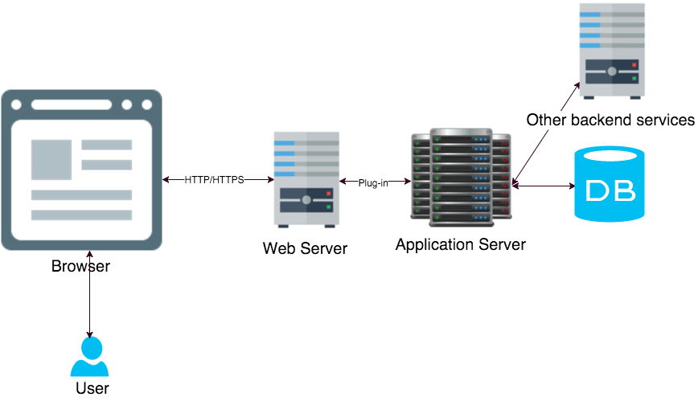
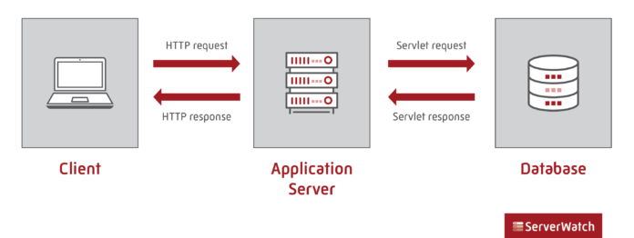
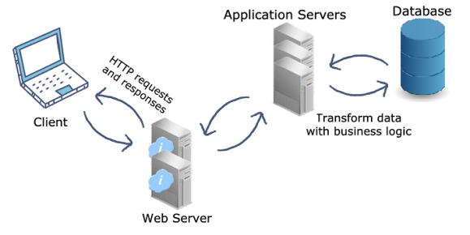
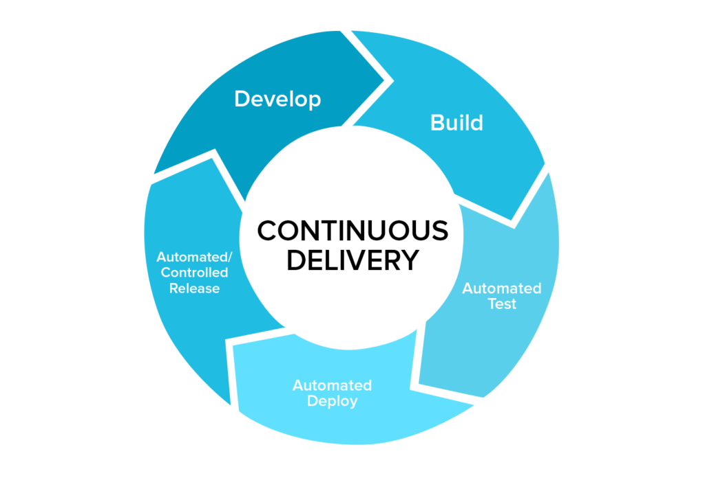

Servidores de aplicaciones
Introducción
Un servidor de aplicaciones es un marco mixto de software que permite tanto la creación de aplicaciones web como un entorno de servidor para ejecutarlas.
A menudo puede ser una pila compleja de diferentes elementos computacionales que ejecutan tareas específicas que necesitan trabajar como uno solo para alimentar múltiples nubes y software y aplicaciones basadas en la web.
Situado entre el servidor web y el nivel de backend del servidor de bases de datos, el servidor de aplicaciones es esencialmente un intermediario para el servidor de bases de datos y los usuarios de las aplicaciones empresariales o de consumo que soporta mediante el uso de varios protocolos e interfaces de programación de aplicaciones (API).

Es habitual que se utilice junto con un servidor web o que contenga un servidor web, por lo que ambos pueden converger y denominarse servidor de aplicaciones web. También es lo suficientemente versátil como para ser utilizado con otros servidores de aplicaciones simultáneamente.
Los servidores de aplicaciones también pueden contener sus propias interfaces gráficas de usuario para su gestión a través de PC, pero también pueden ocuparse de sus propios recursos, así como del procesamiento de transacciones, la mensajería, la agrupación de recursos y conexiones, y la realización de tareas de seguridad.
Servidor de aplicaciones
Las aplicaciones vienen en todas las formas, tamaños y casos de uso. En un mundo en el que dependemos de una serie de procesos empresariales críticos, los servidores de aplicaciones son los ordenadores de gran potencia que proporcionan recursos de aplicaciones a los usuarios y clientes web.
Los servidores de aplicaciones, como ya hemos dicho, se sitúan física o virtualmente entre los servidores de bases de datos que almacenan los datos de las aplicaciones y los servidores web que se comunican con los clientes. Los servidores de aplicaciones y el middleware afín son los sistemas operativos que soportan el desarrollo y la entrega de una aplicación. Ya sea una aplicación de escritorio, móvil o web, los servidores de aplicaciones desempeñan un papel fundamental en la conexión de un mundo de dispositivos.
Terminología de los servidores de aplicaciones
| Término | Descripción |
|---|---|
| Servidor web | Responsable de almacenar, procesar y entregar los datos de E/S de las páginas web |
| Cliente web | Punto final que intenta acceder a los recursos de la web o de la aplicación |
| HTTPS | Protocolo de comunicación seguro entre el servidor web y los clientes web |
| JSON | Lenguaje para el intercambio entre los servidores web y de aplicaciones |
| Lógica de negocio | Reglas para el almacenamiento de datos y la transferencia de recursos de la aplicación |
| Aplicación | Un programa de software o un sitio web unido a una base de datos |
El papel del servidor de aplicaciones en la arquitectura de servicios
Cuando los usuarios de las aplicaciones, ya sea usuarios físicos o los clientes web, solicitan acceso a una aplicación, el servidor de aplicaciones suele hacer el trabajo pesado en el backend para almacenar y procesar las solicitudes dinámicas de las aplicaciones.
¿Por qué necesitamos servidores de aplicaciones?
Miles de millones de clientes web hacen peticiones HTTP cada día, esperando un acceso instantáneo a la aplicación en cuestión. Headspace durante la rutina de la mañana, Google Docs para el informe extenso, Twitter durante la pausa para el café, no importa la aplicación en uso, está siendo consultada en un servidor de aplicaciones y devuelta a través de un servidor web.
Los servidores web se encargan de servir a los clientes web peticiones HTTP con respuestas HTTP. A diferencia de los servidores de aplicaciones, el diseño del servidor web es lo suficientemente ligero como para procesar las solicitudes de datos estáticos de varias aplicaciones (o sitios web), manteniendo la seguridad. Las peticiones dinámicas, a menudo en forma de aplicaciones, requieren asistencia adicional.
Los servidores de aplicaciones optimizan el tráfico y añaden seguridad
Para conseguir una agilidad óptima del servidor web, no sirve gestionar tanto las peticiones HTTP de los clientes web como pasar o almacenar recursos de múltiples sitios web. Los servidores de aplicaciones llenan este vacío con un diseño de alta potencia construido para manejar las solicitudes de contenido web dinámico.
Los servidores de aplicaciones también proporcionan redundancia de programas y una capa adicional de seguridad. Una vez desplegado entre una base de datos y un servidor web, el trabajo de preservar y duplicar la arquitectura de la aplicación a través de la red es más factible. El paso adicional entre las potenciales comunicaciones web maliciosas y las joyas de la corona en el servidor de base de datos añade una capa de seguridad adicional. Dado que los servidores de aplicaciones pueden procesar solicitudes de lógica empresarial, un intento de inyección SQL es también mucho más difícil.
Las organizaciones pueden proteger aún más sus datos con un servidor proxy inverso colocado delante de sus bases de datos. Los servidores proxy y las VPN pueden hacer maravillas para anonimizar y encriptar la comunicación para proteger a los usuarios y los datos de la empresa.

¿Cómo funcionan los servidores de aplicaciones?
Pongamos como ejemplo un servidor de aplicaciones Java.
¿Qué son los servlets?
Un servlet es un programa Java que se ejecuta en un servidor Web y construye o sirve páginas web. De esta forma se pueden construir páginas dinámicas, basadas en diferentes fuentes variables: datos proporcionados por el usuario, fuentes de información variable (páginas de noticias, por ejemplo), o programas que extraigan información de bases de datos.
Comparado con un CGI, un servlet es más sencillo de utilizar, más eficiente (se arranca un hilo por cada petición y no un proceso entero), más potente y portable. Con los servlets podremos, entre otras cosas, procesar, sincronizar y coordinar múltiples peticiones de clientes, reenviar peticiones a otros servlets o a otros servidores u otros.
Como la mayoría de los servidores de hoy en día, los servidores de aplicaciones contienen características de seguridad, transacciones, servicios, clustering, diagnósticos y bases de datos. En lo que se diferencian los servidores de aplicaciones es en su capacidad para procesar peticiones de servlets (programas Java) desde un servidor web.
En la imagen anterior, se muestra el flujo general de los servidores de aplicaciones web:
- El cliente abre un navegador y solicita acceso a un sitio web
- El servidor web recibe la petición HTTP y responde con la página web deseada
- El servidor web gestiona las peticiones de datos estáticos, pero el cliente quiere utilizar una herramienta interactiva
- Al tratarse de una petición de datos dinámicos, el servidor web transfiere la petición a un servidor de aplicaciones
- El servidor de aplicaciones recibe la petición HTTP y la convierte en una petición de servlet
- El servlet llega al servidor de la base de datos, y el servidor de aplicaciones recibe una respuesta del servlet
- El servidor de aplicaciones traduce la respuesta del servlet al formato HTTP para el acceso del cliente
Al recibir una solicitud de servlet de un servidor web, el servidor de aplicaciones procesa la solicitud y responde al servidor web mediante la respuesta de servlet. Dado que los servidores de aplicaciones trabajan principalmente con peticiones de lógica de negocio, el servidor web traduce la respuesta del servlet y pasa una respuesta HTTP accesible para el usuario.

| Servidor de aplicaciones | Servidor web | |
|---|---|---|
| Diseñado para | Sirve peticiones HTTP y de otra lógica de negocio | Sirve peticiones HTTP |
| Almacena y proporciona | Lógica de negocio | Contenido web estático |
| La utilización de los recursos es | Pesada | Ligera |
| Soporta | Transacciones distribuidas y Enterprise JavaBeans (EJB) | Servlets, Java Server Pages (JSP) y JSON |
Servidores de aplicaciones en la década de 2020
El mercado de los servidores de aplicaciones espera crecer a una CAGR del 13,2%, pasando de cerca de 17.000 millones de dólares en 2020 a 41.000 millones en 2026. El crecimiento continuo no es una sorpresa, ya que la conectividad a Internet y la dependencia de las aplicaciones crece.
La migración a las plataformas y servicios en la nube y el auge de los dispositivos IoT son dos impulsores clave en el mercado de infraestructura de aplicaciones y middleware moderno. A esto hay que añadir un movimiento hacia las políticas BYOD (Bring Your Own Device) y una fuerza de trabajo remota que depende de una mayor conectividad y eficiencia operativa.
Servidores de aplicaciones: El mejor amigo de un servidor web
Los servidores de aplicaciones son fundamentales para las exigencias actuales de interconexión. Las empresas, en última instancia, están al servicio de los intereses de los clientes por lo que sin una conexión escalable y estable a los recursos de las aplicaciones, los clientes modernos huirán sin mirar atrás.
Los servidores de aplicaciones asumen el papel de conector y mejor amigo de los servidores web. Cuando los servidores web tienen una petición del cliente que es demasiado para soportar, los servidores de aplicaciones hacen posible mantener la comunicación sin problemas con el contenido web dinámico.
¿Qué es el despliegue de aplicaciones web?
El despliegue en el desarrollo de software y web significa pasar los cambios o actualizaciones de un entorno de funcionamiento a otro. Al configurar un sitio web, siempre se tendrá el sitio web en vivo, que se llama el entorno en vivo o entorno de producción.
Si se quiere tener la capacidad de hacer cambios sin afectar a un sitio web en producción, se puede (y se debe) añadir entornos adicionales. Estos entornos se llaman entornos de desarrollo o entornos de despliegue. Los entornos de desarrollo adicionales suelen ser un entorno local, un entorno de desarrollo y un entorno de preparación o preproducción. El número de entornos que se necesitan depende de cada caso y de la complejidad del proyecto en el que se esté trabajando.
Aunque los modelos de despliegue pueden variar, el más común es el clásico modelo de despliegue "de izquierda a derecha" cuando se trabaja con múltiples entornos de despliegue. En este modelo, los cambios se realizan en entornos locales, de desarrollo o de preparación (dependiendo de la configuración) y se van pasando de izquierda a derecha a través de los diferentes entornos, terminando en el de producción.
Una vez completado este proceso de despliegue, los nuevos cambios serán visibles en el entorno activo.

En la imagen anterior se muestra una forma muy simplificada y clásica de manejar los despliegues cuando se trabaja con sitios web en un CMS. No necesariamente se necesitan todos los entornos anteriores, pero el proceso sigue siendo el mismo.
Al utilizar múltiples entornos se obtiene una lista de ventajas - la principal es que se pueden hacer cambios sin que afecten a su sitio web en vivo. Una vez que los cambios se hacen, se prueban y están listos para ser pasados a producción, el proceso de despliegue se encarga del resto.
¿De qué pasos consta el proceso despliegue?
El flujo del proceso de despliegue consta de 5 pasos: Planificación, desarrollo, pruebas, despliegue y supervisión.
A continuación nos adentraremos en cada uno de los 5 pasos, pero antes una nota rápida.
El flujo del proceso de despliegue que aparece a continuación cubre los aspectos fundamentales, que se dividen en 5 pasos. Esto no significa que sea la única manera de hacerlo - podría haber un proceso mejor para cada caso. Es una simplificación para que cubra las partes más importantes.
-
Recordar tener un plan de despliegue de software
Para asegurarse de que el proceso de despliegue se desarrolle con la mayor fluidez posible, lo mejor es tener un plan de despliegue que se siga en todo momento. Al tener un plan nos aseguramos de que todo se haga de la misma manera cada vez que se realicen cambios. Esto es especialmente útil cuando varios usuarios trabajan en el mismo proyecto.
Un plan de despliegue debe incluir reglas sobre cuándo desplegar desde los entornos locales a los sitios de desarrollo o de puesta en escena, así como horarios para cuando los nuevos cambios pueden ir a un entorno en vivo. Al tener un plan establecido, se reduce el riesgo de conflictos entre los diferentes cambios y se asegura que el proceso de despliegue sea lo más fácil y fluido posible. Si se está trabajando en un proyecto de código abierto, también da la oportunidad de hacer Release Candidates y dejar que la comunidad lo pruebe para detectar cualquier error que se pueda haber pasado por alto.
Además de un plan general, también es importante planificar cada uno de los cambios que se vaya a realizar. Este proceso será muy rápido para los cambios menores, pero debería ser mucho más extenso para los grandes cambios. Si se planifica con mucha antelación, se estará mucho más preparado para tener un proceso de despliegue sin problemas.
-
El desarrollo propiamente dicho
Una vez que se tenga el plan en marcha, es el momento de realizar el desarrollo real. Para garantizar que cualquier desarrollo pueda realizarse simultáneamente y sin romper nada, es importante trabajar únicamente en entornos locales o de desarrollo. Una vez que el proceso de desarrollo está hecho, es el momento de empezar a probar y desplegar los cambios a través de la configuración de su entorno.
-
Probar los cambios
Probar los cambios es crucial para garantizar que no haya errores en el entorno de producción final. Pero las pruebas no pueden completarse sin desplegar los cambios en nuevos entornos.
Una vez que se haya comprobado que todos los cambios funcionan en el entorno local o de desarrollo, es el momento de desplegar los cambios en el siguiente entorno. Esto debe hacerse hasta el entorno de preproducción, donde se deben realizar las pruebas finales de control de calidad. Si todo está correctamente probado y funciona en un entorno parecido al entorno real, es el momento de desplegarlo en vivo.
Si se descubren errores por el camino en cualquier entorno, es importante tener un plan para manejarlos. Por lo general, cualquier cambio que no pase las pruebas en el entorno de ensayo debe ser enviado de nuevo a la fase de desarrollo y -una vez corregido- volver a trabajar en los entornos.
-
Desplegar los cambios en el entorno real
Una vez que se han realizado todas las pruebas en los entornos anteriores y se han corregido los errores, es el momento de desplegar los cambios en el entorno real. Esto debería ser algo bastante seguro, pero todos los que han trabajado en el desarrollo de software saben que algo puede salir mal.
Así que, aunque es fácil detenerse aquí, es importante incluir el último paso del proceso: la monitorización.
-
Supervisar los cambios
Una vez que los nuevos cambios estén en marcha y los usuarios reales utilicen activamente el sitio web o la aplicación, es importante supervisar que todo funcione según lo previsto. Independientemente de la planificación realizada, existe la posibilidad de que los usuarios se encuentren con problemas o realicen acciones que usted no había previsto durante la planificación y el desarrollo.
Un buen consejo para la monitorización es planificar los lanzamientos para los momentos en los que la menor cantidad de usuarios lo noten y en los que se tengan recursos de desarrollo listos en caso de que haya que arreglar algo. De este modo, el número de usuarios afectados por cualquier error será mínimo y se tendrá gente preparada para arreglarlo o revertir los cambios si es necesario.
Si se han de revertir los cambios, es importante mantener la calma y tener un proceso para manejarlo con la misma minuciosidad con la que se manejan los despliegues.
Diferentes tipos de despliegue
Cuando se trata del tipo de despliegue, a menudo se divide en dos partes. Por lo general, se dividirá entre metadatos y contenido, ya que estos tienen diferentes impactos en un nuevo entorno y deben ser manejados de manera diferente.
Despliegue de metadatos
Los metadatos incluyen los cambios en el código, las plantillas, las hojas de estilo, los archivos, etc. Estos cambios a menudo requerirán una comprobación de validación entre entornos para ver si tiene algún conflicto imprevisto que deba resolverse. Muchas herramientas de despliegue incluyen comprobaciones de coherencia y ayudan a guiarte en caso de conflictos.
Despliegue de contenidos
El contenido, como el texto, las imágenes y los vídeos, se maneja de forma diferente durante el despliegue, ya que es menos complicado moverlo entre entornos que los metadatos. Por esa razón, a menudo verás que las herramientas de despliegue hacen que el despliegue de contenido sea accesible para los editores de contenido y no sólo para los desarrolladores. De esta manera, un editor de contenidos no depende de un desarrollador cuando se trata de enviar nuevos contenidos a un entorno activo.
Mejores prácticas de despliegue
Cuando se trabaja con entornos de despliegue, es importante, como se ha mencionado anteriormente, tener un plan y un proceso claro para ello en el equipo. Para ampliar ese proceso hemos reunido algunas mejores prácticas que son buenas para implementar como parte de su proceso.
Se ha de tener en cuenta que las siguientes prácticas recomendadas se refieren principalmente al desarrollo de software y de la web. Si se están llevando a cabo otros tipos de desarrollo puede haber otras cosas a considerar en el flujo de trabajo de despliegue.
Utilizar Git
Esto puede parecer obvio, pero tener un sistema de control de versiones es inestimable para cualquier flujo de trabajo de despliegue. Sin él, es probable que se produzcan errores si se trabaja en equipo.
Incluso si eres el único desarrollador que trabaja en un proyecto, es muy recomendable utilizar Git en caso de que necesites volver a versiones anteriores o si alguien nuevo se une a tu equipo.
Sin Git será difícil asegurar la consistencia en el flujo de trabajo de despliegue y puede llevar a que se cometan más errores por desplegar código inacabado o por no tener a todos los miembros del equipo trabajando en la misma versión del código.
Trabajar en ramas
Como regla general, tu equipo debería trabajar en ramas. Hacerlo así permitirá trabajar en varias cosas al mismo tiempo sin que se afecten entre sí.
Un ejemplo es cuando se encuentra un error que debe ser corregido. Si un desarrollador está utilizando una rama para trabajar en una nueva característica, puede hacer rápidamente una nueva rama del entorno de desarrollo para trabajar en el error. De este modo, habrá dos ramas diferentes que no chocarán ni crearán posibles conflictos de fusión más adelante.
Trabajar con ramas también ayuda al equipo con las preguntas y respuestas a la hora de desplegar en un entorno de preproducción. Tener los cambios en ramas separadas y fusionarlas dará a los testers una mejor visión de lo que se empujó (se hizo push) y lo que deben probar.
Utilizar un entorno local como entorno de desarrollo
Aunque es posible trabajar directamente en un entorno de desarrollo, en la mayoría de los casos se ahorrará mucho tiempo trabajando localmente. Al instalar el sitio web o el software de forma local, se podrá trabajar de forma más eficiente y acelerar las pruebas y la verificación del código.
En primer lugar, no tienes hay que confirmar, empujar y desplegar constantemente un cambio antes de poder verificar si funciona. Y cuando algo no funciona (esto nos pasa a todos) tendrás que revertirlo, empujarlo de nuevo y volver a desplegarlo.
En lugar de eso, puedes simplemente ejecutarlo todo localmente y, una vez que funcione como es debido, puedes empujarlo directamente al entorno de preparación para una prueba más rigurosa.
Revisar las diferencias antes de desplegarlo en el entorno real
Una vez que el equipo de pruebas se haya asegurado de que todo funciona en el entorno de pruebas, es el momento de desplegar el código en el entorno real.
Pero antes de hacer el despliegue final, es importante hacer una revisión final de las diferencias entre el entorno actual en producción y el entorno de desarrollo del que se parte.
Incluso después de las pruebas exhaustivas y la garantía de calidad, las cosas pueden ir mal tan pronto como se llega al entorno real. Y una vez que eso sucede, a menudo puede ser muy estresante implementar correcciones rápidas o hacer una reversión completa de la versión. Por lo general, se querrá evitar esto a toda costa, por lo que es muy recomendable hacer una revisión final del código antes de pulsar el botón de despliegue.
Considerar tener grupos de usuarios con diferentes permisos
Mientras que cualquier desarrollador debe ser capaz de empujar los cambios a los entornos de test, puede ser una buena idea para restringir quién puede desplegarlos en vivo.
Para los equipos más pequeños, esto puede no tener mucho sentido, ya que puede crear un cuello de botella para implantar nuevos cambios. Pero si se trata de un equipo más grande con un nivel de experiencia muy variado entre los miembros del equipo, puede ser una gran idea dejar que sólo los desarrolladores senior desplieguen en el entorno de producción.
Esto asegura efectivamente un mayor nivel de control sobre el flujo de releases y también significa que al menos un par de ojos senior han visto lo que está pasando en el entorno real. Si lo que se tiene es un enfoque muy iterativo con lanzamientos rápidos como el utilizado en la metodología CD (Continous Delivery), esto podría ralentizarlo todo demasiado. Aun así, dado que los cambios que se empujan son normalmente más pequeños con este enfoque, probablemente no se sufrirán grandes retrasos. Y si significa detectar algunos errores más, el tiempo que se ahorra al no tener que corregir errores compensará el tiempo invertido.
Hablando de romper cosas...
Mantener la calma, incluso si algo se rompe
Acabas de desplegar en tu entorno de producción y ahora tu sitio web está roto. Menuda liada, ¿ahora qué se hace?
Desgraciadamente, estas cosas ocurren - no importa lo cuidadoso que se sea. Pero en lugar de entrar en pánico y aplicar hotfixes o retroceder inmediatamente, es importante mantener la calma y asegurarse de que lo que está haciendo no va a romper las cosas aún más.
En primer lugar, se debería comprobar si es posible realizar una reversión o rollback y si realmente se arreglaría algo. En algunas situaciones, es posible que se hayan hecho cambios que son irreversibles y un rollback sólo causaría problemas aún mayores.
También hay que comprobar si lo que se ha roto es una característica existente o nueva. De nuevo, si la cosa que se rompió no era parte de la nueva versión, probablemente no servirá de nada hacer un rollback.
Así que en lugar de entrar en pánico, se debe tener un plan preparado y respirar hondo antes de ponerse a trabajar en la búsqueda de una solución. Puede parecer sencillo, pero puede ayudar a salir de una mala situación mucho más rápido que si lanzándose directamente.
¿A qué hora del día se deben desplegar los cambios?
En caso de que algo se rompa al desplegar en el entorno de producción, es importante encontrar el mejor momento para hacerlo. Y aunque este momento varía mucho de un proyecto a otro, hay dos preguntas que pueden hacerse para determinar cuándo desplegar los cambios:
- ¿Cuándo tiene la menor cantidad de usuarios activos?
- ¿Cuándo tiene a alguien preparado para supervisar y solucionar los problemas después del despliegue?
¿Cuándo tiene el menor número de usuarios activos?
Por lo general, lo que se quiere es que el menor número posible de personas se vea afectado por sus nuevos cambios. Por lo tanto, como regla general, debe buscar cualquier momento del día en el que el menor número de usuarios esté utilizando activamente el sitio web o software.
En el caso de los sitios web, esto puede hacerse consultando las herramientas de análisis de datos que se tengan en marcha, por ejemplo, Google Analytics. Allí se podrán crear informes personalizados que muestren a qué hora del díase tiene menos tráfico, así como identificar las horas punta en las que definitivamente no se debería hacer ningún cambio.
Además de mirar la hora del día, también puede valer la pena mirar cómo se reparte la actividad de los usuarios entre los días de la semana.
Este análisis es muy bueno, pero a menudo acabará con la misma respuesta: Deberían publicarse los cambios durante la noche. Y aunque esto podría parecer una gran idea si sólo nos fijáramos en esta cuestión, es importante que también tengamos en cuenta la siguiente.
¿Hay alguien despierto y preparado para solucionar posibles problemas en ese momento?
Si la respuesta es no, entonces desplegar los cambios en mitad de la noche podría no ser la mejor idea.
En su lugar, se deberían identificar las franjas horarias en las que puedas encontrar el mejor equilibrio entre el número de usuarios activos y los desarrolladores dispuestos a solucionar los problemas. Esto variará mucho dependiendo del proyecto y del equipo, pero en general, se deberían encontrar algunas opciones. Y si ya se tiene un horario fijo de despliegue, incluso puede convencerse al equipo de que esté listo a horas extrañas del día. Es mucho más fácil convencer a alguien de que venga unas horas antes si sabe que sólo ocurre una vez cada ciclo o sprint.
Es por este motivo que en muchas empresas se trabaja con guardias rotativas para ofrecer una disponibilidad total.
Info
Aunque no hay un momento perfecto para el despliegue, definitivamente hay momentos que son mejores que otros.
¿Cuáles son las ventajas del despliegue y de los entornos múltiples?
Reducción del riesgo de romper un sitio web en producción
Una de las principales razones para utilizar múltiples entornos y confiar en el despliegue es reducir el riesgo de que los cambios tengan un impacto negativo en un sitio web en vivo. Mientras que los cambios menores se pueden hacer fácilmente directamente en un sitio web en vivo, los cambios más grandes se pueden hacer en entornos separados sin el riesgo de romper nada en el entorno en vivo.
Tener varios usuarios trabajando en el mismo sitio web también garantiza que nadie se arriesgue a romper algo debido a los cambios de otro usuario.
Ahorro de tiempo
Sin la preocupación de romper algo en un sitio web en vivo, se pueden realizar los cambios en el orden que se prefiera. Esto significa que se puede optimizar el flujo de trabajo para realizar los cambios sin tener en cuenta el aspecto o el funcionamiento del sitio web mientras se lleva a cabo.
Si se trabaja en un entorno local también existe la ventaja de que los cambios se procesan más rápido y no hay dependencias de ningún problema de conectividad.
A la hora de desplegar los cambios, también se ahorrará tiempo, ya que se podrán realizar todos los cambios al mismo tiempo en lugar de tener que hacerlo en varios pasos más pequeños.
El contenido sensible al tiempo es más fácil de gestionar
Si se están llevando a cabo campañas que son sensibles al tiempo y que sólo pueden ponerse en marcha a partir de un determinado día u hora, entonces la ejecución de múltiples entornos y el uso del despliegue pueden ahorrar una gran cantidad de estrés.
Al crear todo el contenido en un entorno de puesta en escena/preprod (o similar) puedes terminar tu campaña sin preocuparte de que sea visible para tus usuarios. Y cuando llegue el momento de lanzarla, podrá hacerla visible en muy poco tiempo desplegándola en su entorno real.
Y si la herramienta de despliegue incluye roles de usuario con configuración de permisos, es posible que un editor de contenidos haga todo esto -incluyendo el despliegue de los cambios- sin involucrar a un desarrollador en el proceso.
Despliegue de aplicaciones Java
Introducción
En el lado del servidor, tenemos que conseguir que nuestro servidor HTTP sea capaz de ejecutar programas de aplicación que recojan los parámetros de peticiones del cliente, los procesen y devuelvan al servidor un documento que éste pasará a su vez al cliente.
Así, para el cliente el servidor no habrá hecho nada distinto a lo estipulado en el protocolo HTTP, pero el servidor podrá valerse de herramientas externas para procesar y servir la petición solicitada, pudiendo así no limitarse a servir páginas estáticas, sino utilizar otras aplicaciones (servlets, JSP...) para servir documentos con contenido dinámico.
Los programas de aplicación son típicamente programas que realizan consultas a bases de datos, procesan la información resultante y devuelven la salida al servidor, entre otras tareas.
Vamos a centrarnos en las aplicaciones web JavaEE, en las que los componentes dinámicos que recibirán las peticiones HTTP en el servidor serán los servlets y JSPs. Estos componentes podrán analizar esta petición y utilizar otros componentes Java para realizar las acciones necesarias (beans, EJBs, etc).
Estructura de una aplicación Java
Una aplicación web JavaEE que utilice servlets o páginas JSP debe tener una estructura de ficheros y directorios determinada:
-
En el directorio raíz de la aplicación se colocan las páginas HTML o JSP (podemos dividirlas también en directorios si queremos)
-
Colgando del directorio inicial de la aplicación, se tiene un directorio WEB-INF, que contiene la información Web relevante para la aplicación.
-
El resto de elementos de la aplicación (imágenes, etc), podemos estructurarlos como nos convenga.
Esta estructura estará contenida dentro de algún directorio, que será el directorio correspondiente a la aplicación Web, y que podremos, si lo hacemos convenientemente, copiar en el servidor que nos convenga. Es decir, cualquier servidor Web JavaEE soporta esta estructura en una aplicación Web, sólo tendremos que copiarla en el directorio adecuado de cada servidor.
Cada aplicación web JavaEE es un contexto, una unidad que comprende un conjunto de recursos, clases Java y su configuración. Cuando hablemos de contexto, nos estaremos refiriendo a la aplicación web en conjunto.
Empaquetamiento
Una forma de distribuir aplicaciones Web es empaquetar toda la aplicación (a partir de su directorio inicial) dentro de un fichero WAR (de forma parecida a como se hace con un TAR o un JAR), y distribuir dicho fichero. Podemos crear un fichero WAR de la misma forma que creamos un JAR, utilizando la herramienta JAR.
Estos ficheros WAR son un estándar de JavaEE, por lo que podremos utilizarlos en los diferentes servidores de aplicaciones JavaEE existentes.
Despliegue de archivos WAR
Los archivos WAR, son un tipo especial de JAR utilizado para distribuir los artefactos o contenido de las aplicaciones Web en tecnología JEE: páginas Web HTML o JSP,clases Java, servlets Java, archivos XML, librerías de etiquetas (tag libraries) y otros recursos.
El empaquetamiento en archivos WAR es algo estándar, pero no así el proceso de despliegue, que es dependiente del servidor. No obstante, la mayoría de servidores JavaEE funcionan en este aspecto de modo similar: permiten desplegar las aplicaciones desde una consola de administración y también "dejando caer" el fichero en determinado directorio.
Maven
Maven es una herramienta open-source, que se creó en 2001 con el objetivo de simplificar los procesos de build (compilar y generar ejecutables a partir del código fuente).
Antes de existir Maven, si queríamos compilar y generar ejecutables de un proyecto, teníamos que analizar qué partes de código se debían compilar, qué librerías utilizaba el código, dónde incluirlas, qué dependencias de compilación había en el proyecto…
En el mejor de los casos, se empleaban unos pocos minutos para saber cómo hacer una build del proyecto. En el peor de los casos, el proceso de build era tan complejo que un desarrollador podía tardar horas en saber cómo compilar y generar los ejecutables a partir del código.
Ahora, la build de cualquier proyecto Maven, independientemente de sus módulos, dependencias o librerías, consiste simplemente en ejecutar el comando mvn install.
Por otra parte, antes de Maven, cada vez que salía una nueva versión de un analizador estático de código, de un framework de pruebas unitarias (como JUnit) o cualquier librería, había que parar todo el desarrollo para reajustar el proceso de build a las nuevas necesidades.
Y… ¿cómo se ejecutaban las pruebas? ¿Cómo se generaban informes? Sin Maven, en cada proyecto esto se hacía de distinta manera.
Lo cierto es que Maven es mucho más que una herramienta que hace builds del código.
Podríamos decir, que Maven es una herramienta capaz de gestionar un proyecto software completo, desde la etapa en la que se comprueba que el código es correcto, hasta que se despliega la aplicación, pasando por la ejecución de pruebas y generación de informes y documentación.
Para ello, en Maven se definen tres ciclos de build del software con una serie de etapas diferenciadas. Por ejemplo el ciclo por defecto tiene las etapas de:
- Validación (validate): Validar que el proyecto es correcto.
- Compilación (compile).
- Test (test): Probar el código fuente usando un framework de pruebas unitarias.
- Empaquetar (package): Empaquetar el código compilado y transformarlo en algún formato tipo .jar o .war.
- Pruebas de integración (integration-test): Procesar y desplegar el código en algún entorno donde se puedan ejecutar las pruebas de integración.
- Verificar que el código empaquetado es válido y cumple los criterios de calidad (verify).
- Instalar el código empaquetado en el repositorio local de Maven, para usarlo como dependencia de otros proyectos (install).
- Desplegar el código a un entorno (deploy).
Para poder llevar a cabo alguna de estas fases en nuestro código, tan solo tendremos que ejecutar mvn y el nombre de la fase (la palabra que puse entre paréntesis). Además van en cadena, es decir, si empaquetamos el código (package), Maven ejecutará desde la fase de validación (validate) a empaquetación (package). Así de simple.
Por otra parte, con Maven la gestión de dependencias entre módulos y distintas versiones de librerías se hace muy sencilla. En este caso, solo tenemos que indicar los módulos que componen el proyecto, o qué librerías utiliza el software que estamos desarrollando en un fichero de configuración de Maven del proyecto llamado POM (Project Object Module).
Además, en el caso de las librerías, no tienes ni tan siquiera que descargarlas a mano. Maven posee un repositorio remoto (Maven central) donde se encuentran la mayoría de librerías que se utilizan en los desarrollos de software, y que la propia herramienta se descarga cuando sea necesario.
Digamos que Maven aporta una semántica común al proceso de build y desarrollo del software.
Incluso, establece una estructura común de directorios para todos los proyectos. Por ejemplo el código estará en ${raíz del proyecto}/src/main/java, los recursos en ${raíz del proyecto }/src/main/resources. Los tests están en ${raíz del proyecto }/src/test.
Despliegue de aplicaciones Node.js con Express
¿Qué es Node.js?
Node JS es un entorno de ejecución de JavaScript rápido que utilizamos para construir aplicaciones del lado del servidor, pero por sí mismono sabe cómo servir archivos, manejar peticiones ni métodos HTTP, así que aquí es donde entra en juego Express JS.
Node.js no es un lenguaje de programación. Más bien, es un entorno de ejecución que se utiliza para ejecutar JavaScript fuera del navegador.

Node.js tampoco es un framework (una plataforma para desarrollar aplicaciones de software). El tiempo de ejecución de Node.js se construye sobre un lenguaje de programación -en este caso, JavaScript- y ayuda a la ejecución de los propios frameworks.
En resumen, Node.js no es un lenguaje de programación ni un marco de trabajo; es un entorno para ellos.
¿Qué es Express?
Express JS es un framework de Node.js diseñado para construir aplicaciones web de API's y aplicaciones móviles multiplataforma de forma rápida y hacer que Node.js sea fácil.

¿Qué es npm?
NPM responde a las siglas de Node Package Manager o manejador de paquetes de node, es la herramienta por defecto de JavaScript para la tarea de compartir e instalar paquetes.

Tal como reza su documentación, npm se compone de al menos dos partes principales.
-
Un repositorio online para publicar paquetes de software libre para ser utilizados en proyectos Node.js
-
Una herramienta para la terminal (command line utility) para interactuar con dicho repositorio que te ayuda a la instalación de utilidades, manejo de dependencias y la publicación de paquetes.
Así pues, NPM es un gestor de paquetes para Javascript. Es una especie de Maven para paquetes Javascript, es decir, sirve para instalar y gestionar versiones de paquetes y librerías js.
NPM lleva mucho tiempo siendo el referente en cuanto a gestores de paquetes javascript, pero desde hace un tiempo le ha salido un competidor: Yarn. Los de yarn aseguran que su gestor de librerías js es mucho más rápido y potente, pero de momento el uso de NPM es mayoritario.
package.json
Cada proyecto en JavaScript puede enfocarse como un paquete npm con su propia información de paquete y su archivo package.json para describir el proyecto.
package.json se generará cuando se ejecute npm init para inicializar un proyecto JavaScript/Node.js, con los siguientes metadatos básicos proporcionados por los desarrolladores:
-
name: el nombre de la librería/proyecto JavaScript
-
version: la versión del proyecto.
-
description: la descripción del proyecto
-
license: la licencia del proyecto
NPM scripts
package.json también soporta la propiedad scripts que puede definirse para ejecutar herramientas de línea de comandos que se instalan en el contexto local del proyecto. Por ejemplo, la porción de scripts de un proyecto npm puede tener un aspecto similar a este:
{
"scripts": {
"build": "tsc",
"format": "prettier --write **/*.ts",
"format-check": "prettier --check **/*.ts",
"lint": "eslint src/**/*.ts",
"pack": "ncc build",
"test": "jest",
"all": "npm run build && npm run format && npm run lint && npm run pack && npm test"
}
}
node_modules/.bin/.
CI/CD (Continous Integration/Continous Deployment-Delivery)
La CI/CD es un método para distribuir las aplicaciones a los clientes con frecuencia mediante el uso de la automatización en las etapas del desarrollo de aplicaciones. Los principales conceptos que se le atribuyen son la integración, la distribución y la implementación continuas. Se trata de una solución para los problemas que puede generar la integración del código nuevo para los equipos de desarrollo y de operaciones (también conocida como "el infierno de la integración").
En concreto, el proceso de integración y distribución continuas incorpora la automatización y la supervisión permanentes en todo el ciclo de vida de las aplicaciones, desde las etapas de integración y prueba hasta las de distribución e implementación. Este conjunto de prácticas se conoce como "canales de CI/CD" y cuenta con el respaldo de los equipos de desarrollo y de operaciones que trabajan en conjunto de manera ágil, con un enfoque de DevOps o de ingeniería de confiabilidad del sitio (SRE).
¿Cuál es la diferencia entre la integración, la distribución y la implementación continuas?
Estas siglas tienen diferentes significados. "CI" siempre se refiere a la integración continua, que es un proceso de automatización para los desarrolladores. El éxito de la CI implica que se diseñen, prueben y combinen los cambios nuevos en el código de una aplicación con regularidad en un repositorio compartido. Supone una solución al problema de que se desarrollen demasiadas divisiones de una aplicación al mismo tiempo, que luego podrían entrar en conflicto entre sí.
La sigla "CD" se refiere a la distribución o la implementación continuas, y se trata de conceptos relacionados que suelen usarse indistintamente. Ambos se refieren a la automatización de las etapas posteriores del proceso, pero a veces se usan por separado para explicar hasta dónde llega la automatización.
Por lo general, la distribución continua se refiere a que los cambios que implementa un desarrollador en una aplicación se someten a pruebas automáticas de errores y se cargan en un repositorio (como GitHub o un registro de contenedores), para que luego el equipo de operaciones pueda implementarlos en un entorno de producción en vivo. Es una solución al problema de la falta de supervisión y comunicación entre los equipos comerciales y de desarrollo, así que su propósito es garantizar que la implementación del código nuevo se lleve a cabo con el mínimo esfuerzo.
La implementación continua (la otra definición de "CD") hace referencia al lanzamiento automático de los cambios que implementa el desarrollador desde el repositorio hasta la producción, para ponerlos a disposición de los clientes. Así ya no se sobrecarga a los equipos de operaciones con procesos manuales que retrasan la distribución de las aplicaciones. Con este tipo de implementación, se aprovechan los beneficios de la distribución continua y se automatiza la siguiente etapa del proceso.

La CI/CD puede incluir solamente la integración y la distribución continuas, o las tres prácticas vinculadas, con la implementación continua. Para complicar un poco más las cosas, a veces se utiliza el término "distribución continua" para abarcar también los procesos de la implementación continua.
En realidad, no vale la pena profundizar en la semántica. Solo debe recordar que la integración y la distribución continuas son un proceso que suele percibirse como una canalización e implica incorporar un alto nivel de automatización permanente y supervisión constante al desarrollo de las aplicaciones.
El significado de los términos varía en cada caso y depende de la cantidad de automatización que se haya incorporado a la canalización de integración y distribución continuas. Muchas empresas comienzan con la incorporación de la CI, y luego van automatizando la distribución y la implementación, por ejemplo, con las aplicaciones desarrolladas directamente en la nube.
Nuestros especialistas pueden ayudar a que su empresa desarrolle las prácticas, las herramientas y la cultura necesarias para modernizar las aplicaciones actuales y diseñar otras nuevas con mayor eficiencia.
Integración continua
El objetivo del diseño de las aplicaciones modernas es que los desarrolladores puedan trabajar de forma simultánea en distintas funciones de la misma aplicación. Sin embargo, si una empresa fusiona todo el código fuente diversificado en un solo día (conocido como el "día de la fusión"), las tareas pueden tornarse tediosas, manuales y muy lentas. Esto se debe a que si un desarrollador que trabaja de forma aislada implementa un cambio en una aplicación, existe la posibilidad de que entre en conflicto con las modificaciones que otros desarrolladores implementaron al mismo tiempo. El problema puede agravarse aún más si cada desarrollador personaliza su propio entorno de desarrollo integrado (IDE) local, en lugar de que todo el equipo adopte un IDE basado en la nube.

La integración continua (CI) permite que los desarrolladores incorporen los cambios del código a un repositorio compartido con mayor frecuencia, o incluso a diario. Una vez que se incorporan las modificaciones del desarrollador, se validan con la compilación automática de la aplicación y la ejecución de distintas pruebas automatizadas (generalmente, de unidad e integración), para garantizar que los cambios no hayan introducido una falla. Esto significa que se debe probar todo, desde las clases y el funcionamiento hasta los distintos módulos que conforman toda la aplicación. Si una prueba automática detecta un conflicto entre el código nuevo y el actual, la CI facilita la resolución de esos errores con rapidez.
Distribución continua
Después de la automatización de las compilaciones y las pruebas de unidad e integración de la CI, la distribución continua automatiza el traslado del código validado hacia un repositorio. Por eso, para que la distribución continua sea eficaz, es importante que la CI ya esté incorporada al proceso de desarrollo. El objetivo de la distribución continua es tener una base de código que pueda implementarse en el entorno de producción en cualquier momento.

Cada etapa (desde la incorporación de los cambios al código hasta la distribución de las compilaciones listas para la producción) implica la automatización de las pruebas y del lanzamiento del código. Al final de este proceso, el equipo de operaciones puede implementar una aplicación para la producción de forma rápida y sencilla. Descubra las otras implementaciones que puede automatizar
Implementación continua
La última etapa del canal consolidado de CI/CD es la implementación continua, que automatiza el lanzamiento de una aplicación a la producción, ya que es una extensión de la distribución continua, la cual automatiza el traslado de una compilación lista para la producción a un repositorio del código. Debido a que no hay ninguna entrada manual en la etapa anterior a la producción, la implementación continua depende en gran medida del correcto diseño de la automatización de las pruebas.

En la práctica, los cambios que implementan los desarrolladores en la aplicación en la nube podrían ponerse en marcha unos cuantos minutos después de su creación (siempre que hayan pasado las pruebas automatizadas). Esto facilita mucho más la recepción e incorporación permanente de los comentarios de los usuarios. En conjunto, todas estas prácticas de CI/CD permiten que se implementen las aplicaciones con menos riesgos, ya que es más fácil incorporar los cambios en las aplicaciones de a poco, en lugar de hacerlo todo de una sola vez. Sin embargo, también deben realizarse muchas inversiones iniciales, ya que se deben diseñar las pruebas automatizadas para que se adapten a las distintas etapas de prueba y lanzamiento en el canal de la CI/CD.
Conclusión
Se ha explicado en este tema cuáles son las características, usos y diferencias entre los servidores web y los servidores de aplicaciones.
También hemos explicado detalladamente en qué consiste un proceso de despliegue clásico de una aplicación web, cuáles son sus fases y características. Para reforzar este proceso, hemos listado una serie de buenas prácticas a la hora de llevarlo a cabo.
Por último, hemos presentado las nuevas tendencias en el mundo del despliegue, como son las técnicas de CI/CD, que abordaremos de forma más profunda en el Tema 7.
Referencias
What is an application server? (I)
What is an application server? (II)
What is deployment in software and web development
Simple y rápido. Entiende qué es Maven en menos de 10 min.
Título de experto universitario en desarrollo de aplicaciones y servicios con JavaEE
Qué es Node.js y por qué debería usarlo
¿Qué son la integración y la distribución continuas (CI/CD)?